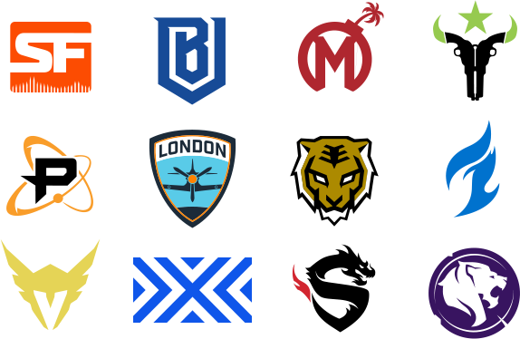

Atlantic Division
- Boston Uprising
- Florida Mayhem
- Houston Outlaws
- London Spitfire
- New York Excelsior
- Philadelphia Fusion
Pacific Division
- Dallas Fuel
- Los Angeles Gladiators
- Los Angeles Valiant
- San Francisco Shock
- Seoul Dynasty
- Shanghai Dragons
Pacific Division en Atlantic Division
De Pacific Division is de minder goede helft van de league en de Atlantic Division is de betere helft van de league.
Regels
Teams zijn tussen zes en twaalf spelers.
Er zijn geen regels op wie kan worden ingezet waar, vandaar dat het in Londen gevestigde team (londen Spitfire) een team heeft dat alleen bestaat uit Koreaanse spelers.
Spelers jonger dan 18 jaar kunnen contracten tekenen en oefenen, maar kunnen pas in de 18e worden als ze aan het spelen zijn.
Logo's
Dit zijn de logo's alle teams in de league:
